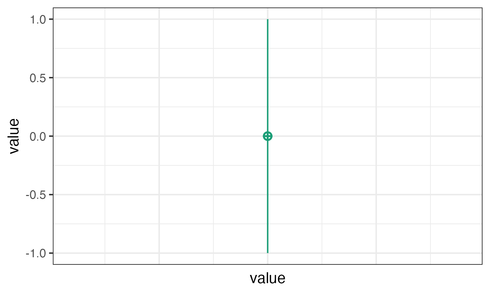
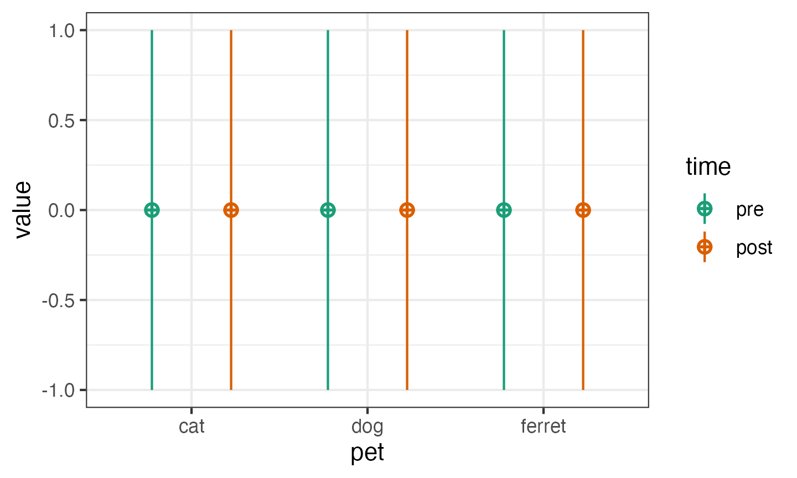

In this tutorial, we’ll learn how to simulate data for factorial designs using {faux}. There are more extensive examples at https://debruine.github.io/faux/.
Multivariate normal
You can create sets of correlated normally distributed values using rnorm_multi().
dat3 <- rnorm_multi( n = 50, vars = 3, mu = c(1, 2, 3), sd = c(0.5, 1, 1.5), r = c(0, .25, .5), varnames = c("A", "B", "C") )
The function get_params() gives you a quick way to see the means, SDs and correlations in the simulated data set to make sure you set the parameters correctly.
get_params(dat3) ## n var A B C mean sd ## 1 50 A 1.00 0.01 0.31 1.00 0.42 ## 2 50 B 0.01 1.00 0.38 1.93 0.92 ## 3 50 C 0.31 0.38 1.00 2.85 1.31
If you set empirical to TRUE, the values you set will be the sample parameters, not the population parameters. This isn’t usually what you want for a simulation, but can be useful to check you set the simulation parameters correctly.
dat3 <- rnorm_multi( n = 50, vars = 3, mu = c(1, 2, 3), sd = c(0.5, 1, 1.5), r = c(0, .25, .5), varnames = c("A", "B", "C"), empirical = TRUE ) get_params(dat3) ## n var A B C mean sd ## 1 50 A 1.00 0.0 0.25 1 0.5 ## 2 50 B 0.00 1.0 0.50 2 1.0 ## 3 50 C 0.25 0.5 1.00 3 1.5
Shortcuts
There are a few shortcuts you can use. Run the following and see if you can guess how they work.
guess1 <- rnorm_multi(50, mu = c(x = 1, y = 2, z = 3), empirical = TRUE) get_params(guess1) ## n var x y z mean sd ## 1 50 x 1 0 0 1 1 ## 2 50 y 0 1 0 2 1 ## 3 50 z 0 0 1 3 1
guess2 <- rnorm_multi(50, vars = 4, r = 0.5, empirical = TRUE) get_params(guess2) ## n var X1 X2 X3 X4 mean sd ## 1 50 X1 1.0 0.5 0.5 0.5 0 1 ## 2 50 X2 0.5 1.0 0.5 0.5 0 1 ## 3 50 X3 0.5 0.5 1.0 0.5 0 1 ## 4 50 X4 0.5 0.5 0.5 1.0 0 1
iris_r <- cor(iris[, 1:4]) iris_mu <- summarise_all(iris[, 1:4], mean) %>% t() iris_sd <- summarise_all(iris[, 1:4], sd) %>% t() guess3 <- rnorm_multi(50, mu = iris_mu, sd = iris_sd, r = iris_r) get_params(guess3) ## n var Sepal.Length Sepal.Width Petal.Length Petal.Width mean sd ## 1 50 Petal.Length 0.84 -0.57 1.00 0.97 3.90 1.79 ## 2 50 Petal.Width 0.81 -0.49 0.97 1.00 1.25 0.76 ## 3 50 Sepal.Length 1.00 -0.19 0.84 0.81 6.03 0.77 ## 4 50 Sepal.Width -0.19 1.00 -0.57 -0.49 3.10 0.50
You can set the r for correlations is a few different ways.
# all correlations the same value rho_same <- rnorm_multi(50, 4, r = .5, empirical = TRUE) get_params(rho_same) ## n var X1 X2 X3 X4 mean sd ## 1 50 X1 1.0 0.5 0.5 0.5 0 1 ## 2 50 X2 0.5 1.0 0.5 0.5 0 1 ## 3 50 X3 0.5 0.5 1.0 0.5 0 1 ## 4 50 X4 0.5 0.5 0.5 1.0 0 1
# upper right triangle rho_urt <- rnorm_multi(50, 4, # X2 X3 X4 r = c(0.5, 0.4, 0.3, # X1 0.2, 0.1, # X2 0.0), # X3 empirical = TRUE) get_params(rho_urt) ## n var X1 X2 X3 X4 mean sd ## 1 50 X1 1.0 0.5 0.4 0.3 0 1 ## 2 50 X2 0.5 1.0 0.2 0.1 0 1 ## 3 50 X3 0.4 0.2 1.0 0.0 0 1 ## 4 50 X4 0.3 0.1 0.0 1.0 0 1
# full correlation matrix rho_cormat <- rnorm_multi(50, 4, # X1 X2 X3 X4 r = c(1.0, 0.5, 0.4, 0.3, # X1 0.5, 1.0, 0.2, 0.1, # X2 0.4, 0.2, 1.0, 0.0, # X3 0.3, 0.1, 0.0, 1.0), # X4 empirical = TRUE) get_params(rho_cormat) ## n var X1 X2 X3 X4 mean sd ## 1 50 X1 1.0 0.5 0.4 0.3 0 1 ## 2 50 X2 0.5 1.0 0.2 0.1 0 1 ## 3 50 X3 0.4 0.2 1.0 0.0 0 1 ## 4 50 X4 0.3 0.1 0.0 1.0 0 1
Factorial Designs
You can just use rnorm_multi() to simulate data for each between-subjects cell of a factorial design and manually combine the tables, but faux has a function that better maps onto how we usually think and teach about factorial designs.
The default design is 100 observations of one variable (named y) with a mean of 0 and SD of 1. Unless you set plot = FALSE or run faux_options(plot = FALSE), this function will show you a plot of your design so you can check that it looks like you expect.
simdat1 <- sim_design()

Factors
Use lists to set the names and levels of within- and between-subject factors.
pettime <- sim_design( within = list(time = c("pre", "post")), between = list(pet = c("cat", "dog", "ferret")) )

You can set mu and sd with unnamed vectors, but getting the order right can be tricky.
pettime <- sim_design( within = list(time = c("pre", "post")), between = list(pet = c("cat", "dog", "ferret")), mu = 1:6 )

You can set values with a named vector for a single type of factor. The values do not have to be in the right order if they’re named.
pettime <- sim_design( within = list(time = c("pre", "post")), between = list(pet = c("cat", "dog", "ferret")), mu = c(cat = 1, ferret = 5, dog = 3), sd = c(pre = 1, post = 2) )

Or use a data frame for within- and between-subject factors.
pettime <- sim_design( within = list(time = c("pre", "post")), between = list(pet = c("cat", "dog", "ferret")), mu = data.frame( pre = c(1, 3, 5), post = c(2, 4, 6), row.names = c("cat", "dog", "ferret") ) )

If you have within-subject factors, set the correlations for each between-subject cell like this. You need to tell get_params() if you have any between-subject columns.
pettime <- sim_design( within = list(time = c("pre", "post")), between = list(pet = c("cat", "dog", "ferret")), r = list(cat = 0.5, dog = 0.25, ferret = 0), empirical = TRUE, plot = FALSE ) get_params(pettime, between = "pet") ## pet n var pre post mean sd ## 1 cat 100 post 0.50 1.00 0 1 ## 2 cat 100 pre 1.00 0.50 0 1 ## 3 dog 100 post 0.25 1.00 0 1 ## 4 dog 100 pre 1.00 0.25 0 1 ## 5 ferret 100 post 0.00 1.00 0 1 ## 6 ferret 100 pre 1.00 0.00 0 1
You can also change the name of the dv and id columns and output the data in long format. If you do this, you also need to tell get_params() what columns contain the between- and within-subject factors, the dv, and the id.
dat_long <- sim_design( within = list(time = c("pre", "post")), between = list(pet = c("cat", "dog", "ferret")), id = "subj_id", dv = "score", long = TRUE, plot = FALSE ) get_params(dat_long, between = "pet", within = "time", id = "subj_id", dv = "score", digits = 3) ## pet n var pre post mean sd ## 1 cat 100 post 0.071 1.000 0.036 0.875 ## 2 cat 100 pre 1.000 0.071 -0.001 1.120 ## 3 dog 100 post 0.127 1.000 0.065 0.976 ## 4 dog 100 pre 1.000 0.127 -0.036 1.081 ## 5 ferret 100 post 0.075 1.000 0.035 0.936 ## 6 ferret 100 pre 1.000 0.075 0.072 0.967
Anonymous Factors
If you need to make a quick demo, you can set factors anonymously with integer vectors.
dat_anon <- sim_design( n = 50, between = c(3, 2), within = 2, mu = 1:12 )

Faux has a quick plotting function for visualising data made with sim_design.
plot(dat_anon)
 You can change the order of plotting and the types of geoms plotted. This takes a little trial and error, so this function will probably be refined in later versions.
You can change the order of plotting and the types of geoms plotted. This takes a little trial and error, so this function will probably be refined in later versions.
Replications
You often want to simulate data repeatedly to do things like calculate power. The sim_design() function has a lot of overhead for checking if a design makes sense and if the correlation matrix is possible, so you can speed up the creation of multiple datasets with the same design using the rep argument. This will give you a nested data from with each dataset in the data column.
dat_rep <- sim_design( within = 2, n = 20, mu = c(0, 0.25), rep = 10, plot = FALSE )
You can run analyses on the nested data like this:
map_df(dat_rep$data, ~{ t.test(.x$A1, .x$A2, paired = TRUE) %>% broom::tidy() }) ## # A tibble: 10 x 8 ## estimate statistic p.value parameter conf.low conf.high method alternative ## <dbl> <dbl> <dbl> <dbl> <dbl> <dbl> <chr> <chr> ## 1 -0.131 -0.427 0.674 19 -0.774 0.512 Paired t… two.sided ## 2 -0.268 -1.13 0.274 19 -0.768 0.231 Paired t… two.sided ## 3 -0.304 -0.908 0.375 19 -1.01 0.397 Paired t… two.sided ## 4 -0.550 -1.99 0.0607 19 -1.13 0.0273 Paired t… two.sided ## 5 -0.143 -0.487 0.632 19 -0.759 0.473 Paired t… two.sided ## 6 -0.142 -0.423 0.677 19 -0.845 0.561 Paired t… two.sided ## 7 0.377 1.54 0.139 19 -0.134 0.888 Paired t… two.sided ## 8 -0.281 -0.831 0.416 19 -0.989 0.427 Paired t… two.sided ## 9 -0.0883 -0.287 0.777 19 -0.731 0.555 Paired t… two.sided ## 10 0.147 0.549 0.590 19 -0.414 0.707 Paired t… two.sided
Exercises
Multivariate normal
Sample 40 values of three variables named J, K and L from a population with means of 10, 20 and 30, and SDs of 5. J and K are correlated 0.5, J and L are correlated 0.25, and K and L are not correlated.
From existing data
Using the data from the built-in dataset attitude, simulate a new set of 20 observations drawn from a population with the same means, SDs and correlations for each column as the original data.
2b
Create a dataset with a between-subject factor of “pet” having two levels, “cat”, and “dog”. The DV is “happiness” score. There are 20 cat-owners with a mean happiness score of 10 (SD = 3) and there are 30 dog-owners with a mean happiness score of 11 (SD = 3).
3w
Create a dataset of 20 observations with 1 within-subject variable (“condition”) having 3 levels (“A”, “B”, “C”) with means of 10, 20 and 30 and SD of 5. The correlations between each level have r = 0.4. The dataset should look like this:
| id | condition | score |
|---|---|---|
| S01 | A | 9.17 |
| … | … | … |
| S20 | A | 11.57 |
| S01 | B | 18.44 |
| … | … | … |
| S20 | B | 20.04 |
| S01 | C | 35.11 |
| … | … | … |
| S20 | C | 29.16 |
2w*2w
Create a dataset with 50 observations of 2 within-subject variables (“A” and “B”) each having 2 levels. The mean for all cells is 10 and the SD is 2. The dataset should have 20 subjects. The correlations look like this:
| A1_B1 | A1_B2 | A2_B1 | A2_B2 | |
|---|---|---|---|---|
| A1_B1 | 1.0 | 0.5 | 0.5 | 0.2 |
| A1_B2 | 0.5 | 1.0 | 0.2 | 0.5 |
| A2_B1 | 0.5 | 0.2 | 1.0 | 0.5 |
| A2_B2 | 0.2 | 0.5 | 0.5 | 1.0 |
2w*3b
Create a dataset with a between-subject factor of “pet” having 3 levels (“cat”, “dog”, and “ferret”) and a within-subject factor of “time” having 2 levels (“pre” and “post”). The N in each group should be 10. Means are:
- cats: pre = 10, post = 12
- dogs: pre = 14, post = 16
- ferrets: pre = 18, post = 20
SDs are all 5 and within-cell correlations are all 0.25.
Replications
Create 5 datasets with a 2b*2b design, 30 participants in each cell. Each cell’s mean should be 0, except A1_B1, which should be 0.5. The SD should be 1. Make the resulting data in long format.
Power
Simulate 100 datasets like the one above and use lm() or afex::aov_ez() to look at the interaction between A and B. What is the power of this design?